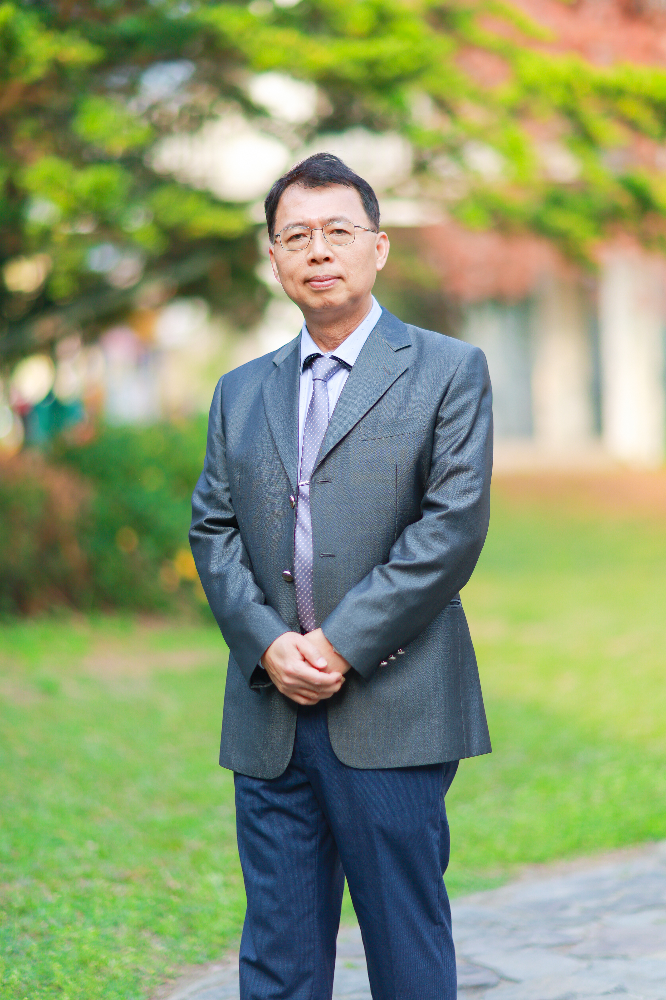

🌱
Wholeness全人
培育身心靈均衡發展的完整孩子，不偏廢任何一面。
A warm community school in Sheetou Township — where every child is seen, believed in, and given room to bloom.
社頭鄉的溫暖社區型學校——每個孩子都被看見、被相信，都有屬於自己發光的空間。

PrincipalPrincipal Xiao Jui-yu leads Jioushe Elementary School with a deep belief in whole-person education — that a school's true purpose is not simply to fill children with knowledge, but to give every child the environment they need to discover their own strengths, build confidence, and grow into themselves.
Under the principal's leadership, Jioushe has developed three pillars of student life: a basketball programme that has produced county and national-level competitors; a technology curriculum equipping students with digital literacy and creative problem-solving skills; and a bilingual education programme weaving English naturally into everyday school life.
蕭睿瑜校長以「全人教育」的信念帶領舊社國小。他相信，學校真正的使命不只是傳遞知識，而是為每一位孩子創造適合的環境，讓他們發現自己的強項、建立自信，成長為最好的自己。
在校長的帶領下，舊社國小以三大特色為學生生活的核心：在縣級乃至全國賽事中屢獲佳績的籃球隊、培養數位素養與創新能力的科技教育課程，以及將英語自然融入日常的雙語教育計畫。
Whole-person education means believing in every student's potential — and building a school where joy and growth are never in conflict.
全人教育意味著相信每位學生的潛能——建立一所讓快樂與成長並行的學校。
Three strong programmes, one warm campus — at Jioushe, every child finds a place where they belong and a path to shine.
三大特色計畫，一個溫暖的校園——在舊社，每個孩子都能找到屬於自己的舞台。
Principal Xiao Jui-yu firmly believes that education must begin with love — providing students with role models through the learning environment, dedicated teachers, supportive administration, and engaged families. As principal, she leads by example: caring for teachers, students, parents, and the wider community, embodying the values she hopes every student will carry forward.
蕭睿瑜校長堅信，教育應以愛為出發點，從學習環境、教師典範、行政人員的服務、社區家長的支持等，為學生提供最佳的學習榜樣。身為校長，她更以愛為基準，關懷教師、學生、家長、社區，以身作則，才是辦學成功之道。
從對教育的熱愛，到對教育的省思，體會到「教育是點燈的工作」，在未來的工作中，也許將面臨嚴峻的挑戰，但個人願意以宗教家發願的精神，投入於教育的工作中，無怨無悔的佈施，在孩子的身上看到他們的希望，也感受到自己的責任；唯有秉持著「教育無他，愛與榜樣而已」的信念，自己以身作則，點亮孩子希望之燈。
我相信——「教育會因愛而豐富，而愛也會因教育而發揚光大」。
我希望——「學生因我而展翅高飛，教師因我而樂於教學，家長因我而充滿信心」。
我堅持——「將個人的信念轉化為教育的理念，堅持對教育的熱愛，帶領老師學生家長共創卓越精緻的優質學校」。
Educators, parents, and community friends are warmly welcome to visit Jioushe Elementary in Sheetou Township. We are especially glad to welcome those curious about bilingual education, technology learning, or the passion that drives our basketball programme.
歡迎教育工作者、家長與社區朋友蒞臨彰化縣社頭鄉舊社國小交流。無論您對雙語教育、科技課程，還是我們的籃球隊有興趣，舊社的大門永遠為您敞開。